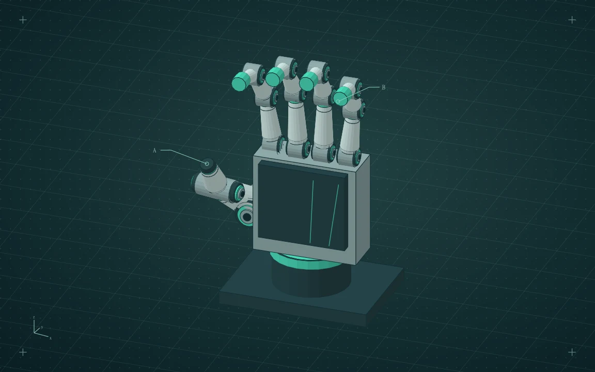

手套驱动的灵巧手遥操作Glove-to-Hand Teleoperation
将 DexCap 手套采集的手部运动映射到灵巧智能 DexHand021 灵巧手。Hand motion captured by a DexCap glove drives DexRobot’s DexHand021 dexterous hand.

手套数据怎样成为灵巧手动作Turning glove data into hand motions
这个项目的输入来自 DexCap 手套，输出是灵巧智能 DexHand021 的关节指令。两边的手指尺寸、坐标和可动范围不同，映射时需要决定保留哪些动作特征。我的入口是指尖的位置和指腹朝向。The input comes from a DexCap glove, and the output is a set of joint commands for DexRobot’s DexHand021. Because the two hands differ in scale, coordinate frames and range of motion, I used fingertip position and fingerpad orientation to define the mapping.
我开发手部运动映射、控制接口以及记录与回放工具。I developed the motion mapping, hand-control interface, and recording and replay tools.
从手套到指尖Map glove motion to fingertips
解析手套数据，完成坐标对齐和尺度映射，通过正逆运动学匹配指尖位置与指腹方向。I parsed glove data, aligned coordinate frames, applied motion scaling, and used forward and inverse kinematics to match fingertip positions and fingerpad orientations.
记录与回放Record and replay
加入关节与速度限制，联调控制接口，关联记录手套信号、指尖位姿、关节指令与触觉反馈。I integrated joint and speed limits and linked glove signals, fingertip poses, joint commands, and tactile feedback in the recordings.
把手的动作存下来Keeping a record of each movement
在 DexHand021 上集成并测试了手套控制接口和运动限制。I integrated and tested the glove-control interface and motion limits on the DexHand021.